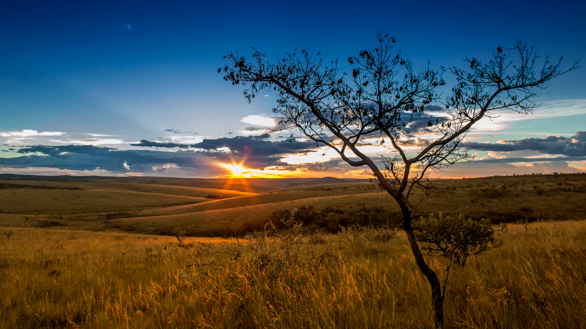

Imagens do Cerrado
Página Inicial
Imagens da Amazônia
Imagens do Pantanal

Imagem de um por do sol no Cerrado
Imagem clássica do bioma do Cerrado
🔝 Voltar ao topo
Saiba mais sobre o Cerrado
 Imagem clássica do bioma do Cerrado
Imagem clássica do bioma do Cerrado